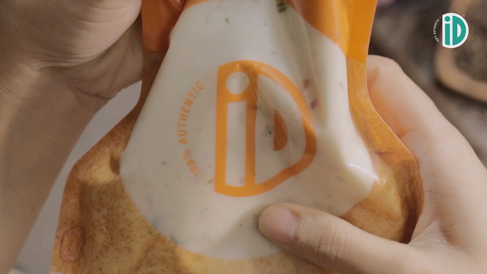

And it’s the one you’re about to make. Breakfast treats, evening appetizers or a just-like-that snack, vadas are always the perfect indulgence. Here’s iD Vada 2.0. What makes it different? You do! Add your own masala to it and make your vada, your way da! Just chop, add, fry and enjoooooy!
Whip up a quick and fresh snack easily. The same
taste and the same recipe, but the method gets
more fun. Keep your hands clean, and your
stomachs happy with these easy-to-make
traditional and preservative-free vadas.
Open the pack to add your chopped veggies & spices, and mix it!
Slide the cutter upwards and rotate the nozzle to open it.
Squeeze gently, until the batter forms the perfect ring.
Slide the cutter downwards to make one vada. Wipe off excess batter before making the next one.
In a wok of hot oil, fry the vadas until golden brown and crisp.
Remove excess oil and serve hot with your favourite accompaniments.
Made from the freshest ingredients, the recipe is traditional and preservative-free.
The method might be modern, but the batter is traditional.
We put all our energy into ensuring your food is fresh, preservative-free and healthy.
While the vadas have less than half a gram of saturated fat, there is no trans-fat, making the
vadas light as well as delicious.